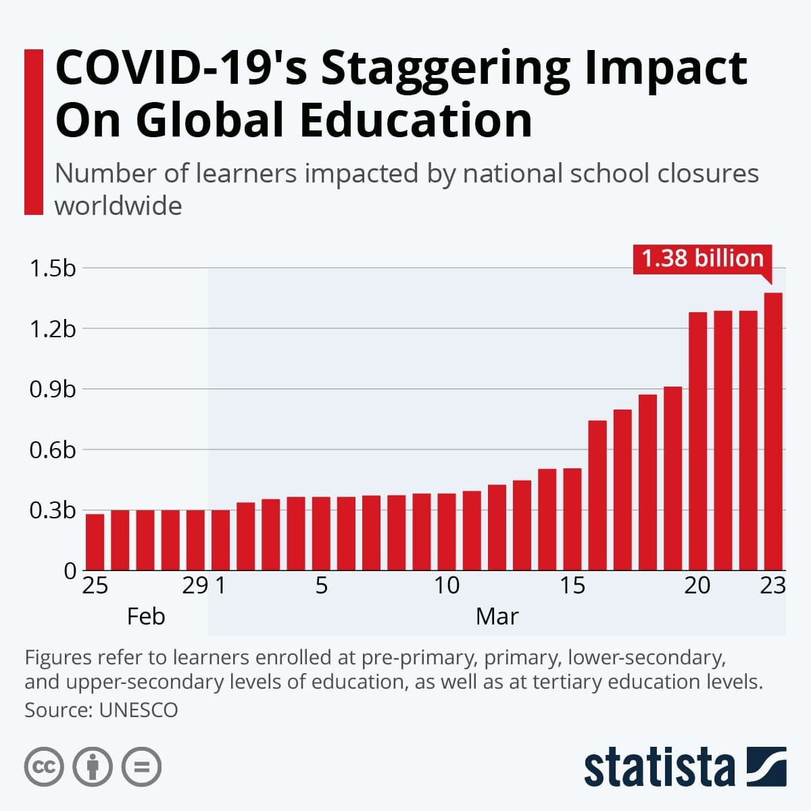
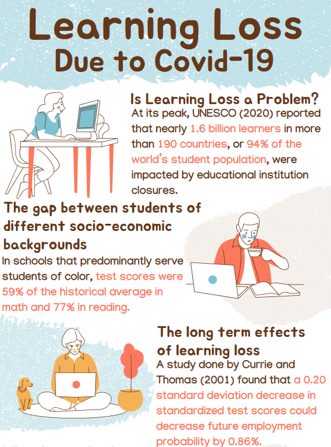

Find A Volunteer Tutoring Community & Empower K-12 Learners in SEL, Math and Reading
Volunteer & Mentoring Opportunities
Opportunities for volunteers and mentors usually range from one-time events to weekly campus-based commitments during school hours. Some organizations also have remote tutoring & mentoring options, hosted on their own learning platform, with more schedule flexibility for volunteers in different time zones. Too busy for meetings but want to help? You can also donate school supplies, materials or money to your choice of local school or non-profit organization. To get started as a community volunteer, you can: Find a link to organizations in your local community from our directory, find your area on the interactive map, or click on the 'For volunteers' button for more info. For any questions, or if you need assistance please fill out the contact form and we will get back to you as soon as we can.
For Students
If you'd like to request help in Math, English or would like to chat with a volunteer, please click the map for links to resources within your community or the 'For students' button to view a page with more info.
About
Mission and Purpose
At the heart of this informational website lies a mission: to empower individuals through education How? We help both volunteers and students find resources within their local community. Whether you'd like to help elementary school students struggling with basic literacy, high school seniors grappling with complex math concepts, or middle school students who need social-emotional learning chats, the overarching goal remains consistent—to provide personalized support that nurtures academic growth and cultivates confidence.
Our vision is for all students and families to have the support they need from within their local community.
What is The Little Lunch Buddy Volunteer Project?
The Little Lunch Buddy Volunteer Project is a web development project for social good, dedicated to helping prospective volunteers or donors find ways to help their local community. It provides information so that you can support non-profit organizations and schools near you through free and accessible tutoring services & donated materials for K-12 students in your local community.
Featured City: Austin, Texas
In 2024, Austin, Texas, is experiencing a transformative period in its educational landscape, significantly influenced by legislative changes and community-driven efforts. Organizations like the Neighborhood Longhorns Program (NLP) at The University of Texas at Austin are actively engaging volunteers, especially college students, to provide tutoring and mentoring to Central Texas school students. Similarly, Breakthrough Central Texas is offering volunteer opportunities to assist students with college essays, scholarship applications, and one-on-one tutoring, requiring volunteers to undergo an orientation and pass a background check. Communities In Schools of Central Texas is also contributing by offering various volunteer roles such as reading buddies, tutors, mentors, and pen pals, emphasizing the importance of consistent weekly commitments from volunteers to support students' academic needs.
The educational attainment within the Austin Metropolitan Statistical Area (MSA) remains high, with a significant percentage of the population holding at least a high school diploma or a bachelor's degree or higher. However, the educational sector is facing challenges due to legislative changes, notably Senate Bill 17, which prohibits public higher education institutions in Texas from engaging in diversity, equity, and inclusion (DEI) activities. This has led to the closure of DEI offices and programs at universities, including the University of Texas at Austin, raising concerns about the impact on educational equality and the support available for marginalized student communities. The ban on DEI efforts has resulted in the closure of cultural identity centers and the elimination of programs that provided resources for undocumented students, creating an atmosphere of fear and censorship on campuses and potentially declining diversity among the student population.
Despite these legislative changes, The University of Texas at Austin has received a record number of applications for fall 2024, indicating a sustained demand for education at the institution. However, Central Texas school districts are bracing for budget cuts due to inflation and insufficient increases in public education spending from the state legislature, which could impact staff retention, program availability, and overall educational quality. To address teacher attrition and retention, the College of Education at UT Austin has developed THRIVE, an initiative providing professional development, community building, and sustainability planning for school districts throughout Texas.
These developments underscore the dynamic and challenging nature of education in Austin, Texas, in 2024, where community-driven volunteer tutoring efforts are playing a crucial role in supporting students amidst broader challenges related to legislative changes and budget constraints.
Impact of COVID-19 on Global Education

The COVID-19 pandemic has had a profound and multifaceted impact on education, leading to significant learning loss and exacerbating pre-existing educational inequalities. The abrupt transition to remote learning, the variability in access to technology and supportive learning environments, and the psychological stress induced by the pandemic have collectively contributed to a widespread educational crisis. This crisis has not only hindered academic progress but has also highlighted and widened the gaps between students from different socioeconomic backgrounds.
The pandemic-induced school closures and the shift to remote learning have resulted in substantial learning loss across various subjects, with mathematics and reading being particularly affected. Studies have shown that students, on average, have fallen behind by months in their academic learning, with the most significant setbacks observed among students from low-income families, students of color, and those with limited access to technology and educational resources. This learning loss is not uniform but is deeply intertwined with existing educational disparities, further disadvantaging students who were already facing systemic barriers to educational success. The disparities in learning loss are attributed to several factors, including unequal access to high-quality remote learning, differences in home learning environments, and varying levels of parental support and engagement. For instance, students from affluent families are more likely to have access to private tutoring, dedicated study spaces, and technological resources, whereas students from low-income families may struggle with basic internet access and lack a conducive learning environment. Sources: [1], [2], [3].
Are there lasting effects of the pandemic learning loss?
Here's a short video about concerns regarding students experiencing learning loss during the Covid-19 pandemic.

The Role of Tutoring in Addressing Learning Loss
In response to the learning loss and educational inequalities exacerbated by the pandemic, tutoring has emerged as a potent intervention to help students catch up academically. High-dosage tutoring, characterized by frequent and intensive sessions tailored to individual student needs, has been identified as particularly effective in mitigating learning loss and closing achievement gaps.
Research has demonstrated that tutoring can produce significant improvements in academic performance, with some studies reporting that students who received high-dosage tutoring showed substantial gains in subjects like mathematics, effectively reducing course failures and improving overall grades. Tutoring provides personalized attention and instruction that can address specific learning gaps, reinforce foundational skills, and boost students' confidence in their academic abilities.
Moreover, tutoring programs that are integrated into the school day and involve consistent interaction with the same tutor have shown promise in fostering positive student-tutor relationships, which are crucial for effective learning. These programs can be particularly beneficial for students from disadvantaged backgrounds, offering them the targeted support needed to overcome educational barriers and achieve academic success.
How can we turn around pandemic-era learning loss?
Here's a short video discussing the challenges facing students nationwide and efforts to stem the country's learning loss.
Impact
According to research published by the National Center for Education Statistics (NCES), students who receive one-on-one tutoring experience significant improvements in academic performance, particularly in subjects like math and reading.
A study done by researchers at UC San Diego, with the help of volunteer mentorship nonprofit CovEducation, matched students with volunteer tutors from research universities. They found that the tutoring helped students close about 1/4-1/3 of their learning loss due to Covid-19.
Studies have shown that students who participate in tutoring programs are more likely to achieve higher grades, improve their test scores, and develop stronger foundational skills compared to their peers who do not receive such support.
Implementing Effective Tutoring Programs
For tutoring to be a viable solution to pandemic-related learning loss, it must be accessible to all students, especially those most affected by educational inequalities. This requires substantial investment in tutoring programs, including funding for hiring and training tutors, integrating tutoring into school curricula, and ensuring that tutoring services are available to students regardless of their socioeconomic status. Schools and policymakers must prioritize evidence-based tutoring models that have been proven to work, focusing on interventions that are cost-effective and scalable. Additionally, engaging parents and communities in the tutoring process can enhance the effectiveness of these programs, ensuring that students receive the support they need both inside and outside the classroom.
Why should you consider tutoring in your community?
The COVID-19 pandemic has exacerbated existing educational inequalities, highlighting the urgent need for interventions to support students who have fallen behind. Volunteering as a tutor for K-12 students emerges as a powerful way to address these disparities and foster educational equity. Here are several compelling reasons why individuals should consider volunteering their time to tutor students in need.
Bridging the Learning Gap
The pandemic has led to significant learning losses across various subjects, with vulnerable students from low-income families, students of color, and those with limited access to technology being disproportionately affected. Volunteer tutoring can play a crucial role in bridging this learning gap. Research has shown that tutoring, especially when delivered with intensity and tailored to individual student needs, can lead to substantial improvements in academic performance. By volunteering as a tutor, individuals can provide the personalized attention and support that students need to catch up and succeed academically.
Educational equity is about ensuring that all students have access to the resources and opportunities they need to achieve their full potential, regardless of their background or circumstances. Volunteer tutoring can help promote equity by providing targeted support to students who are most at risk of falling behind. By volunteering, individuals can help level the playing field, ensuring that all students, regardless of their socioeconomic status, have the opportunity to succeed in school and beyond.
Enhancing Personal Growth and Community Involvement
Volunteering as a tutor offers numerous personal benefits, including the opportunity for personal growth, skill development, and increased sense of purpose. Volunteers often report feeling a deep sense of satisfaction from making a positive impact in a child's life. Furthermore, tutoring allows volunteers to develop valuable skills such as communication, empathy, and teaching strategies that can be beneficial in various aspects of life. Additionally, volunteering fosters a sense of community and belonging, as individuals work alongside educators, parents, and other volunteers towards a common goal of supporting student success.
Teachers and schools are under immense pressure to address the learning losses caused by the pandemic, often with limited resources and support. Volunteer tutors can help alleviate some of this pressure by providing additional academic support to students, allowing teachers to focus on classroom instruction and other critical aspects of their role. By volunteering, individuals can contribute to a collaborative effort to enhance the educational experience for all students, supporting teachers and schools in their mission to educate and inspire the next generation.
The impact of the COVID-19 pandemic on education has underscored the need for community involvement and support to address learning losses and promote educational equity. Volunteering as a tutor offers a meaningful way for individuals to make a difference in the lives of K-12 students, helping them overcome challenges and achieve academic success. Beyond the immediate benefits to students, volunteer tutoring enriches the lives of volunteers, strengthens communities, and supports the broader educational ecosystem. As we navigate the post-pandemic landscape, the role of volunteer tutors has never been more critical in shaping a more equitable and successful future for all students.
How does volunteer tutoring help address the achievement gap in K-12 education?
Volunteer tutoring can play a significant role in addressing the achievement gap in K-12 education by providing additional support to students who need it most. Here are some ways in which volunteer tutoring can help:
Personalized Learning: Volunteer tutors can offer one-on-one or small group instruction that is tailored to the specific needs of each student. This personalized approach can be particularly effective in helping students grasp challenging concepts and improve their academic performance.
Supplementing Classroom Instruction: Tutors can reinforce what is being taught in the classroom, providing students with the extra practice and explanation they need to fully understand the material. This can be especially helpful for students who may not receive enough individual attention in a larger classroom setting.
Building Confidence: By working closely with students, volunteer tutors can help build their confidence and motivation. As students improve their skills and begin to experience success, their self-efficacy increases, which can lead to better performance across all subjects.
Increasing Access to Support: Volunteer tutoring programs can make academic support more accessible to students who might not otherwise be able to afford private tutoring. This can help level the playing field for students from lower-income families.
Improving Equity: By targeting support to students who are most at risk of falling behind, such as low-income students, students of color, and English language learners, volunteer tutoring can help reduce educational disparities and promote equity.
Supporting Teachers: Volunteer tutors can alleviate some of the pressures on teachers by providing additional academic support to students. This allows teachers to focus on delivering high-quality instruction and managing the classroom.
Enhancing Social and Emotional Skills: Tutors can also support the development of students' social and emotional skills, which are critical for academic success. Effective tutors often use a trauma-informed, strength-based approach that recognizes and addresses the broader challenges students may face.
Community Engagement: Volunteer tutoring programs can foster a sense of community involvement and responsibility. When community members invest their time in local schools, it can lead to stronger community-school partnerships and a shared commitment to student success.
Providing Role Models: Tutors can serve as positive role models and mentors for students, showing them the value of education and inspiring them to set and achieve their own academic goals.
Encouraging Lifelong Learning: By engaging with volunteer tutors who are passionate about education, students can develop a love for learning that extends beyond the classroom and lasts a lifetime.
In summary, volunteer tutoring can help bridge the achievement gap by providing individualized support, reinforcing classroom learning, building student confidence, and increasing access to educational resources. It also supports teachers, promotes educational equity, and fosters community engagement, all of which contribute to a more equitable and successful educational system.
The COVID-19 pandemic has underscored the urgent need to address learning loss and educational inequalities. Tutoring, particularly high-dosage tutoring, offers a promising pathway to help students recover academically and narrow the achievement gaps exacerbated by the pandemic. However, realizing the full potential of tutoring as a solution requires a concerted effort from educators, policymakers, and communities to ensure that all students have access to the support they need to succeed in the post-pandemic educational landscape.
Sign our petition to advocate for increased funding and resources for tutoring and educational support services in the Austin community.
🖊️ AJ from Round Rock supports this.
🖊️ Anita from Austin supports this.
🖊️ Tater from Georgetown supports this.
🖊️ 3 people have signed this petition and support this cause.
Resources
Resources in Austin, Texas:
Within the counties near Austin, Texas, or the Texas Hill Country area, several free tutoring services are available to students. These services cater to a range of educational needs, from homework help to subject-specific tutoring. Here are some of the free tutoring services identified:
Learning Bridge: Serves students in K-12th grade in Travis, Hays, Williamson, Bastrop, and Bell counties. It matches tutors with kids in foster care to provide educational support.
learningbridgetx.org.
Club Z! Tutoring of the Texas Hill Country: Offers services and programs to support students of all ages, from kindergarten readiness through college admissions counseling. They are offering families their first session free.
einnews.com,
clubztutoring.com/hill-country/summer-tutoring.
FindHelp.org: Lists free online tutoring services by Learn to Be for residents of Travis County, TX, and includes cities like Austin, TX. This platform provides a way to find various tutoring programs in the area.
findhelp.org/education/tutoring--round-rock-tx.
These services offer a variety of tutoring options, including online and in-person sessions, to accommodate different learning styles and needs. They cover a wide range of subjects and grade levels, ensuring that students across the Texas Hill Country and counties near Austin can find the support they need to succeed academically.
Within the counties near Austin, Texas, or the Texas Hill Country area, several free tutoring services are available to students. These services cater to a range of educational needs, from homework help to subject-specific tutoring. Here are some of the free tutoring services identified:
Resources within Texas
Maybe I should remove this lol
Top 10 most populous states in the USA
Resources within the USA
Here are organizations that provide free tutoring services within the USA:
Bored of Boredom: A Los Angeles-based, student-led tutoring service for kids in grades K-8, operating nationwide.
CovEducation: Utilizes over 6,000 volunteers from hundreds of universities across the U.S. to provide free tutoring and mentoring.
Learn to Be: A national nonprofit offering 1:1 online tutoring in all K-12 subjects, using a pay-what-you-can model.
Pandemic Professors: Serves K-12 students in more than 15 states, primarily from low-income communities, offering free online tutoring.
Schoolhouse.world: Founded by Sal Khan, this platform offers free, online, peer-to-peer tutoring in math and SAT Prep for students at least 13 years old.
UPchieve: Aims to provide free online 1:1 high school tutoring in math, science, reading & writing, SAT, and college prep to low-income students.
Wave Learning Festival: Offers free tutoring programs via Zoom, focusing on a variety of subjects.
Tutor.com: While primarily a paid service, it provides no-cost tutoring to families of the U.S. military and partners with various institutions to offer free tutoring.
FEV Tutor, Inc.: Offers full-service virtual tutoring across a wide range of subjects and grade levels.
Hey Tutor Inc.: Provides both in-person and virtual tutoring services.
Math-A-Matics Tutoring: Offers full-service tutoring in math, both in-person and virtually.
MindPlay Education: Offers partial service virtual tutoring focusing on reading.
These organizations offer a range of tutoring services, from subject-specific help to general academic support, utilizing various formats including 1:1 tutoring, group sessions, and both in-person and virtual options to cater to the diverse needs of students across the United States.
less than 15%
15%-25%
25%-35%
35%-45%
>45%
Didn't find what you were looking for?
It's recommended to check with local public libraries, school districts, and community colleges for available resources. Many educational institutions and non-profits extend their tutoring services to students from neighboring areas, especially through online platforms, making it easier for students outside of Austin, TX to benefit from these programs. You can also click here to visit a Google search link for free tutoring services in your area.
Donate
Interested in providing monetary or material donations to help students? Please consider donating to local school districts or non-profit organizations that provide free tutoring services in your area. You can send learning materials in kind for classrooms in your local community as well. There is always a need for school supplies and teachers in your area will always appreciate any help for their classrooms.
In the USA, there are also organizations like Donors Choose and Adopt a Classroom that makes it easy for anyone to help a classroom in need.
Related News
Clicking on the headlines below will take you to the linked news article
Is tutoring the answer to pandemic learning loss
Some state-level initiatives have been launched to address pandemic learning loss